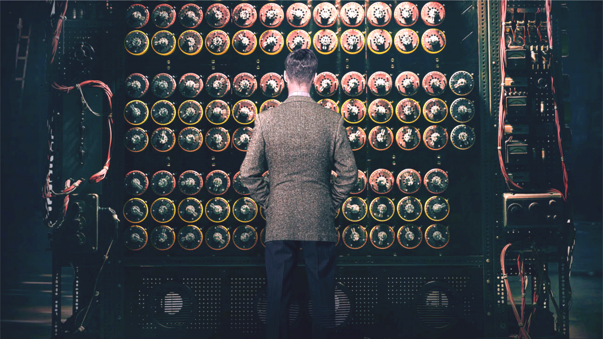

¿Qué es?

Una máquina de Turing es un dispositivo que manipula símbolos sobre una tira de cinta de acuerdo con una tabla de reglas. A pesar de su simplicidad, una máquina de Turing puede ser adaptada para simular la lógica de cualquier algoritmo de computador y es particularmente útil en la explicación de las funciones de una CPU dentro de un computador.
Funcionamiento
La máquina de Turing consta de un cabezal lector/escritor y una cinta infinita en la que el cabezal lee el contenido, borra el contenido anterior y escribe un nuevo valor.
La memoria es la cinta de la máquina que se divide en espacios de trabajo denominados celdas, donde se pueden escribir y leer símbolos. Inicialmente todas las celdas contienen un símbolo especial denominado «blanco». Las instrucciones que determinan el funcionamiento de la máquina tienen la forma, «si estamos en el estado x leyendo la posición y, donde hay escrito el símbolo z, entonces este símbolo debe ser reemplazado por este otro símbolo, y pasar a leer la celda siguiente, bien a la izquierda o bien a la derecha».
La máquina de Turing puede considerarse como un autómata capaz de reconocer lenguajes formales. En ese sentido, es capaz de reconocer los lenguajes recursivamente enumerables, de acuerdo a la jerarquía de Chomsky. Su potencia es, por tanto, superior a otros tipos de autómatas, como el autómata finito, o el autómata con pila, o igual a otros modelos con la misma potencia computacional.
Importancia
Turing ideó un modelo formal de computador, la máquina de Turing, y demostró que existían problemas que una máquina no podía resolver. Con este aparato extremadamente sencillo es posible realizar cualquier cómputo que un computador digital sea capaz de realizar.
Uso actual
La Máquina de Turing es un modelo matemático abstracto, no un dispositivo físico. Su uso actual no es práctico para el cálculo cotidiano, pero es fundamental como fundamento teórico y herramienta de análisis. Prácticamente todas las computadoras y lenguajes de programación modernos se basan en este principio.
Sus usos y aplicaciones hoy en día son:
- Límites de la computación
- Complejidad computacional
- Diseño de lenguajes de programación
- Criptografía y Ciberseguridad